chain – Chain Drives¶
See beltdriv – Belt Drives, gearing – Gears & Gearing, shaft – Shafts and Shafting, and torque – Torque & Horsepower.
Legacy Output¶
The following is incomplete. But it gives a flavor.
No. of teeth in sprocket A ..........? 59
No. of teeth in sprocket B ..........? 28
ENTER: Chain No., or pitch in decimal inches ...? 25
Chain Number .............. 25
Chain pitch (inches)..... 0.250
SMALL SPROCKET-No.teeth.... 28
-Pitch dia... 2.233
LARGE SPROCKET-No.teeth ... 59
-Pitch dia... 4.697
Ratio ..................... 2.107:1
Minimum c.c. (inches)..... 3.715
( Press [ ENTER ] if not applicable )
ENTER desired approx. c.c. ........? 36
Desired c.c. (inches)..... 36.000
Analysis¶
Chain data appears to be an integer code, the pitch measurement, and the tensile strength.
| code | pitch | TS |
| 25 | .25 | 925 |
| 35 | .375 | 2100 |
| 40 | .5 | 3700 |
| 50 | .625 | 6100 |
| 60 | .75 | 8500 |
| 80 | 1 | 14500 |
| 100 | 1.25 | 24000 |
| 120 | 1.5 | 34000 |
| 140 | 1.75 | 46000 |
| 160 | 2 | 58000 |
| 180 | 2.25 | 80000 |
| 200 | 2.5 | 95000 |
| 240 | 3 | 130000 |
| 500 | 3 | 1E7 |
There are several calculations here: Sprocket Size (from RPM), Chain Size (from sprocket size) and tension/torque.
Menu Item “1” computes chain data from sprocket sizes. This is a piece of the larger calculation. Lines 1520-1670.
X: No. of teeth in sprocket A Y: No. of teeth in sprocket B 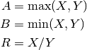
NO: Chain Code P: Chain pitch TS: Chain Tensile Strength Lines 1680-2240 display the report and compute center-to-center spacing.
I: Small Sprocket Pitch Diameter S: Large Sprocket Pitch Diameter. V_1: Minimum c.c. (inches) 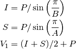
V_2: Desired approx. c.c. C: Actual c.c. (inches) L: Chain length (pitches) P*L: Chain length (inches) 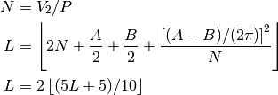
while 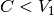:
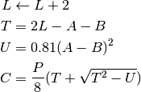
Menu Item “2” computes sprocket and chain data from shaft speeds. This is lines 550-1500. Then it jumps to 1680 to display the report and compute center-to-center spacing.
X: RPM Sprocket A Y: RPM Sprocket B W: Minimum teeth, small sprocket 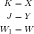
While :
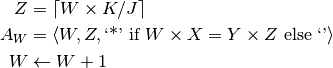
After computing the various combinations, this is the number of rows to display.
[Note the quirky reuse of Y.]
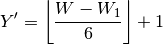
Display the various formatted 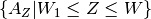 values in a six-column display.
After this display, then the small sprocket, B, is chosen. From this, the large sprocket, A, is calculated.
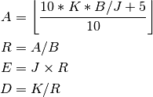
E: RPM (a) X J: RPM (a) Y K: RPM (b) X D: RPM (b) YY Pick either (a) or (b).
[Note the possible bug in using YY.]
H: Drive horsepower Compute number of strands of various types of chain. Lines 1270 to 1500. This code is quirky.
The variable CH starts at zero.
Line 1280.
If CH is greater than zero, this isn’t a real search, instead it simply computes SP and Q for the currently found size of chain.
This section appears to simply step through each size of chain looking for a size where the tensile strength is not exceeded.
This uses 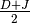 as the RPM’s to design for. Why an average? Why not the larger of D or J (which is generally J)?
For SN, P, TS in each size of chain:
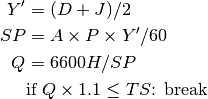
This has located the smallest size of chain that will work. SN is the code, P is the pitch and TS is the tensile strength.
If CH is 2, it does not compute the number of strands. It jumps to 1680 to produce the final report.
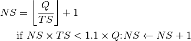
If necessary, two strands may be required. This isn’t a loop, so the answer to the number of strands is either one or two.
However. During the initial CH = 0 pass, if SN is not 500 (the largest size) then the number of strands is reset to 1. Weirdly. See line 1370.
The user is given a menu of two items.
- space. Set CH to 2, goes back to line 1280. This recomputes the current chain size, SP and Q.
- zero. Set CH to 1, go to line 1510 to accept manual input of a chain size. This does the menu item 1 calculation.
Then jump to 1680 to display the report and compute center-to-center spacing.
Implementation¶
hamcalc.construction.chain
This has several calculation functions for various parts of the belt design process.
Plus definitions of tensile strebgth for some common chain pitches.
The materials are a module global, material.
| name | pitch | TS |
| 25 | .25 | 925 |
| 35 | .375 | 2100 |
| 40 | .5 | 3700 |
| 50 | .625 | 6100 |
| 60 | .75 | 8500 |
| 80 | 1 | 14500 |
| 100 | 1.25 | 24000 |
| 120 | 1.5 | 34000 |
| 140 | 1.75 | 46000 |
| 160 | 2 | 58000 |
| 180 | 2.25 | 80000 |
| 200 | 2.5 | 95000 |
| 240 | 3 | 130000 |
| 500 | 3 | 1E7 |
Test Cases for Materials
>>> import hamcalc.construction.chain as chain
>>> chain.material["25"]
Chain(name='25', P=0.25, TS=925)
Test Cases for design_sprocket_distances() and final_sprocket_distance()
>>> import hamcalc.construction.chain as chain
>>> V_1, I, S, R= chain.design_sprocket_distances( 59, 28, chain.material["35"] )
>>> round( V_1, 3 )
5.573
>>> round( I, 3 )
3.349
>>> round( S, 3 )
7.046
>>> round( R, 3 )
2.107
>>> C, L, L_P = chain.final_sprocket_distance( 59, 28, chain.material["35"], 6 )
>>> round( C, 3 )
6.193
>>> round( L, 3 )
78
>>> round( L_P, 3 )
29.25
Test Cases for sprocket_choice_iter()
>>> import hamcalc.construction.chain as chain
>>> choices= [ row for row in chain.sprocket_choice_iter( 3500, 1700, 24 ) ]
>>> len(choices)
35
>>> even = [ c for c in choices if c[2] ]
>>> even
[(34, 70, True), (51, 105, True)]
Test Cases for design_sprocket_size()
>>> import hamcalc.construction.chain as chain
>>> factors = chain.design_sprocket_size( 3500, 1700, 51 )
>>> factors[0]
(105, 51)
>>> round(factors[1],3)
2.059
>>> tuple( round(x,3) for x in factors[2] )
(3500.0, 1700)
>>> tuple( round(x,3) for x in factors[3] )
(3500, 1700.0)
>>> factors = chain.design_sprocket_size( 3500, 1700, 26 )
>>> factors[0]
(54, 26)
>>> round(factors[1],3)
2.077
>>> tuple( round(x,3) for x in factors[2] )
(3530.769, 1700)
>>> tuple( round(x,3) for x in factors[3] )
(3500, 1685.185)
Test Cases for design_chain_iter()
>>> import hamcalc.construction.chain as chain
>>> chains = list( chain.design_chain_iter( 54, 26, 3530.769, 1700, 80 ) )
>>> chains[0]
(Chain(name='35', P=0.375, TS=2100), 1)
Test Cases for tension_torque()
>>> import hamcalc.construction.chain as chain
>>> Q, T_A, T_B = chain.tension_torque( 54, 26, 3530.769, 1700, 80, chain.material["35"] )
>>> round(Q,3)
920.261
>>> round(T_A,3)
2967.573
>>> round(T_B,3)
1431.506
- class hamcalc.construction.chain.Chain¶
Chain(name, P, TS)
- P¶
Alias for field number 1
- TS¶
Alias for field number 2
- name¶
Alias for field number 0
- hamcalc.construction.chain.design_chain_iter(A, B, X, Y, H)[source]¶
Given sprocket teeth counts, A and B, and an RPM values, X and Y, and drive horsepower, H, compute the minimimal chain and, possibly, the number of chain strands. Generally, the first value is all that’s required.
Parameters: - A – larger sprocket teeth
- B – smaller sprocket teeth
- X – larger sprocket RPM
- Y – smaller sprocket RPM
- H – Drive horsepower
Returns: Iterates over a sequence of acceptable chain and number of strands. Strands is usually 1 but may be 2.
- hamcalc.construction.chain.design_sprocket_distances(X, Y, chain)[source]¶
Given sprocket teeth counts X and Y, and a particular chain description, compute minimum center-to-center distance.
Parameters: - X – larger sprocket teeth
- Y – smaller sprocket teeth
- chain – instance of hamcalc.construction.chain.Chain
Returns: 4-tuple with minimum distance between sprockets, pitch diameter of both sprockets, and the ratio.
- hamcalc.construction.chain.design_sprocket_size(X, Y, B)[source]¶
Given sprocket RPM values X and Y, and a particular small sprocket size, B, compute the A sprocket size, as well as the actual ratio and final RPM combinations.
Parameters: - X – larger sprocket RPM
- Y – smaller sprocket RPM
- B – Small sprocket size in number of teeth
Returns: 4-tuple with (A,B) sprocket sizes, the actual ratio, plus the design (X,Y) RPM pair and an alternate design (X,Y) RPM pair.
- hamcalc.construction.chain.final_sprocket_distance(X, Y, chain, V_2)[source]¶
Given sprocket teeth counts X and Y, a particular chain description, and a desired distance, V_2, compute required center-to-center distance.
Parameters: - X – larger sprocket teeth
- Y – smaller sprocket teeth
- chain – instance of hamcalc.construction.chain.Chain
- V_2 – Desired center-to-center distance
Returns: 2-tuple with center to center distance, chain length in pitches and inches
- hamcalc.construction.chain.sprocket_choice_iter(X, Y, W=17)[source]¶
Given sprocket RPM values X and Y, and a particular mimumum sprocket size, W, yield alternative sprocket pairs for the requested ratio.
Parameters: - X – larger sprocket RPM
- Y – smaller sprocket RPM
- W – small sprocket minimum number of teeth. Less than 17 teeth is not recommended.
Returns: Sequence of triples with two sprocket sizes and a boolean flag to indicate that this is an exact match with the given RPM values.
- hamcalc.construction.chain.tension_torque(A, B, X, Y, H, M)[source]¶
Given sprocket teeth counts, A and B, and an RPM values, X and Y, and drive horsepower, H, compute tension overall and torque at each sprocket.
Parameters: - A – larger sprocket teeth
- B – smaller sprocket teeth
- X – larger sprocket RPM
- Y – smaller sprocket RPM
- H – Drive horsepower
- M – Chain material object.
Quirks¶
Exit isn’t menu item 0. Also, there are a extra RESTORE’s.
The region from 1270 to 1500 has a peculiar looping structure, and uses a CH status variable to invoke parts of the calculation as a kind of subroutine.